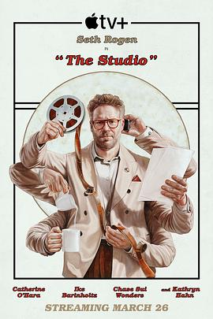

片厂风云 第一季 / The Studio Season 1
又名：片场风云 / 制片厂 / 制片厂风云 / 工作室 / 好莱坞制片厂 / 斗戏影业(港)
作品信息
| 导演 | 塞斯·罗根 / 埃文·戈德堡 |
| 编剧 | 塞斯·罗根 / 埃文·戈德堡 / 皮特·海克 / 弗里达·佩雷斯 / 亚历克斯·格利高里 / 詹姆斯·韦弗 |
| 主演 | 塞斯·罗根 / 凯瑟琳·奥哈拉 / 凯瑟琳·哈恩 / 伊克·巴里霍尔兹 / 切斯·隋·万德斯 / 布莱恩·克兰斯顿 / 雷亚·普尔曼 / 凯拉·蒙特罗索·梅加 / 德韦恩·珀金斯 / 佐伊·克罗维兹 / 戴夫·弗兰科 / 大卫·克朗姆霍茨 / 马丁·斯科塞斯 / 朗·霍华德 / 莎拉·波利 / 查理兹·塞隆 / 保罗·达诺 / 格蕾塔·李 / 彼得·博格 / 史蒂夫·布西密 / 安东尼·麦凯 / 奥利维亚·王尔德 / 扎克·埃夫隆 / 帕克·芬恩 / 欧文·克莱恩 / 丽贝卡·豪尔 / 杰西卡·圣克莱尔 / 乔什·哈切森 / 艾斯·库珀 / 里尔·莱尔·哈瓦瑞 / 齐威·富莫多 / 尼古拉斯·斯托勒 / 亚当·斯科特 / 泰德·萨兰多斯 / 安东尼·斯塔尔 / 艾琳·莫里亚蒂 / 拉米·尤素夫 / 珍·斯玛特 / 昆塔·布伦森 / 丽萨·吉洛伊 / 艾伦·索金 / 扎克·施奈德 / 露西亚·安尼洛 / 保罗·当斯 / 马修·贝洛尼 / 亚瑟小子 / 托马斯·巴布萨卡 / 乔希·斯通 / 卡拉·路易斯 / 阿拉·斯托姆 / 尤利·索里利亚 / 谢琳·坎 / 明迪·德·莱西 / 大卫·莫斯科维茨 / 肖恩·帕特里克·布莱恩 / 詹妮弗·伍兹 / 詹妮弗·卡斯蒂略 |
| 类型 | 剧情 / 喜剧 |
| 制片国家/地区 | 美国 |
| 语言 | 英语 |
| 首播 | 2025-03-26(美国) |
| 季数 | 1 |
| 集数 | 10 |
| 单集片长 | 45分钟 |
| IMDb | tt23649128 |
最后一次看到是 2026-08-12T17:47:03+08:00 · 豆瓣原页